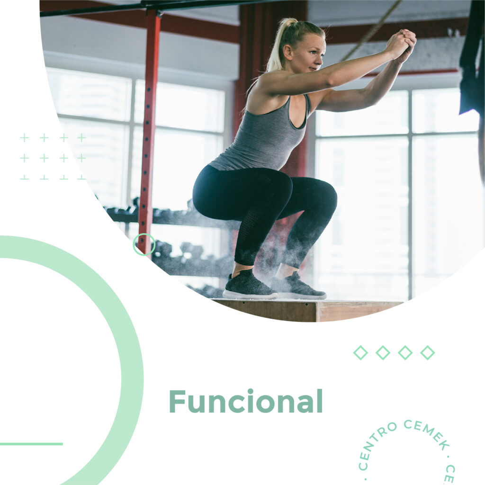
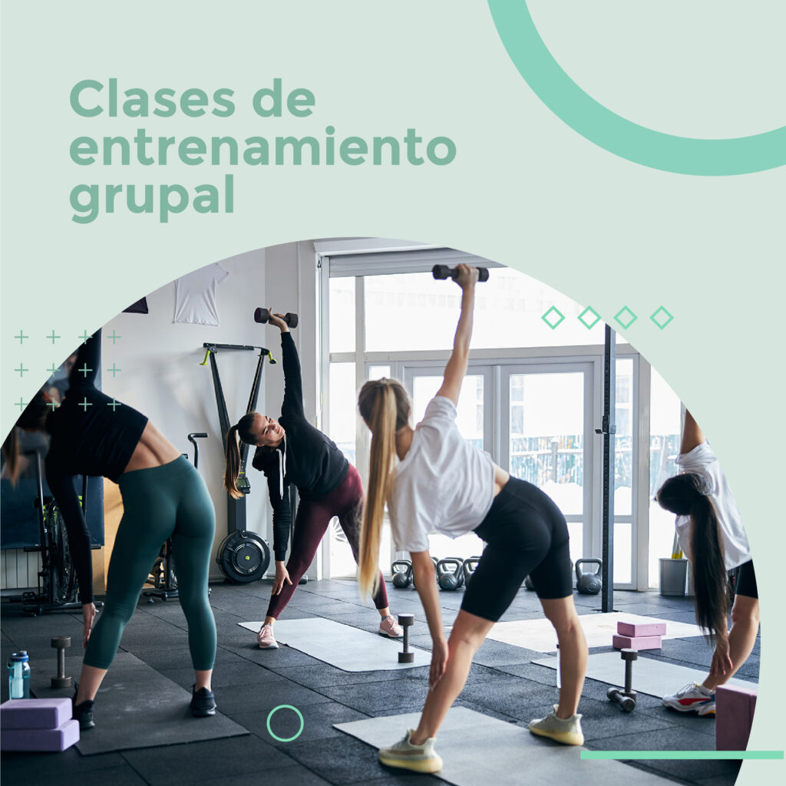
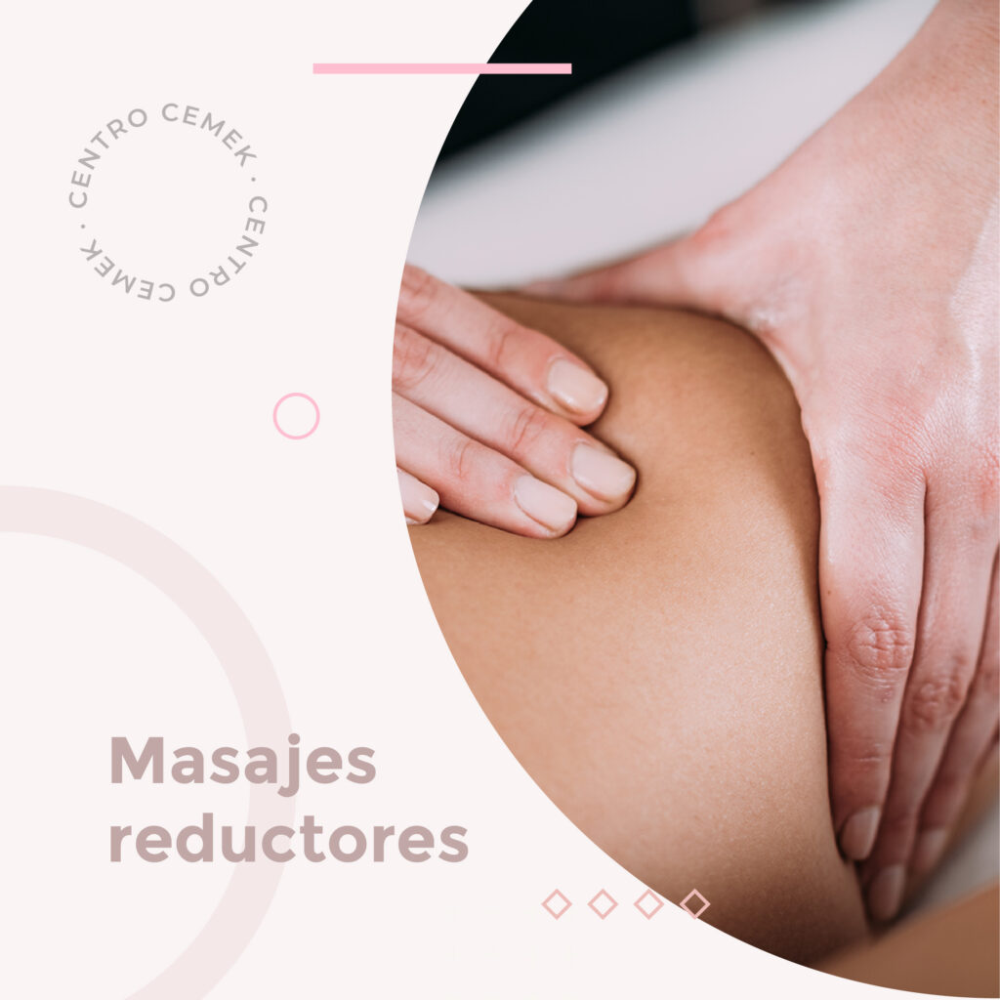
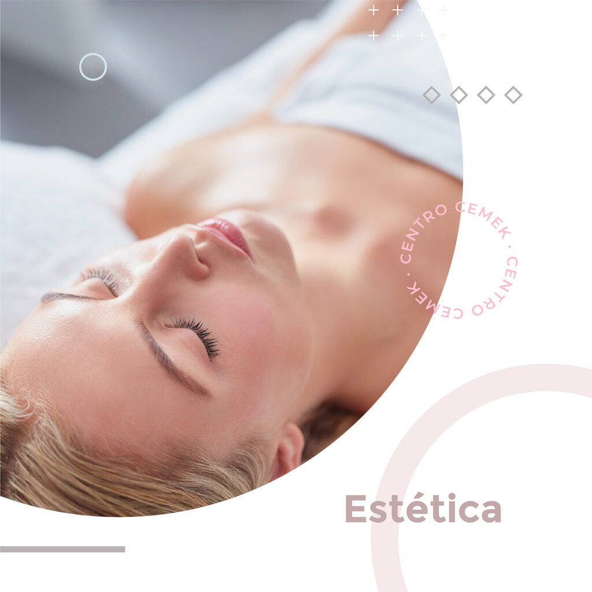
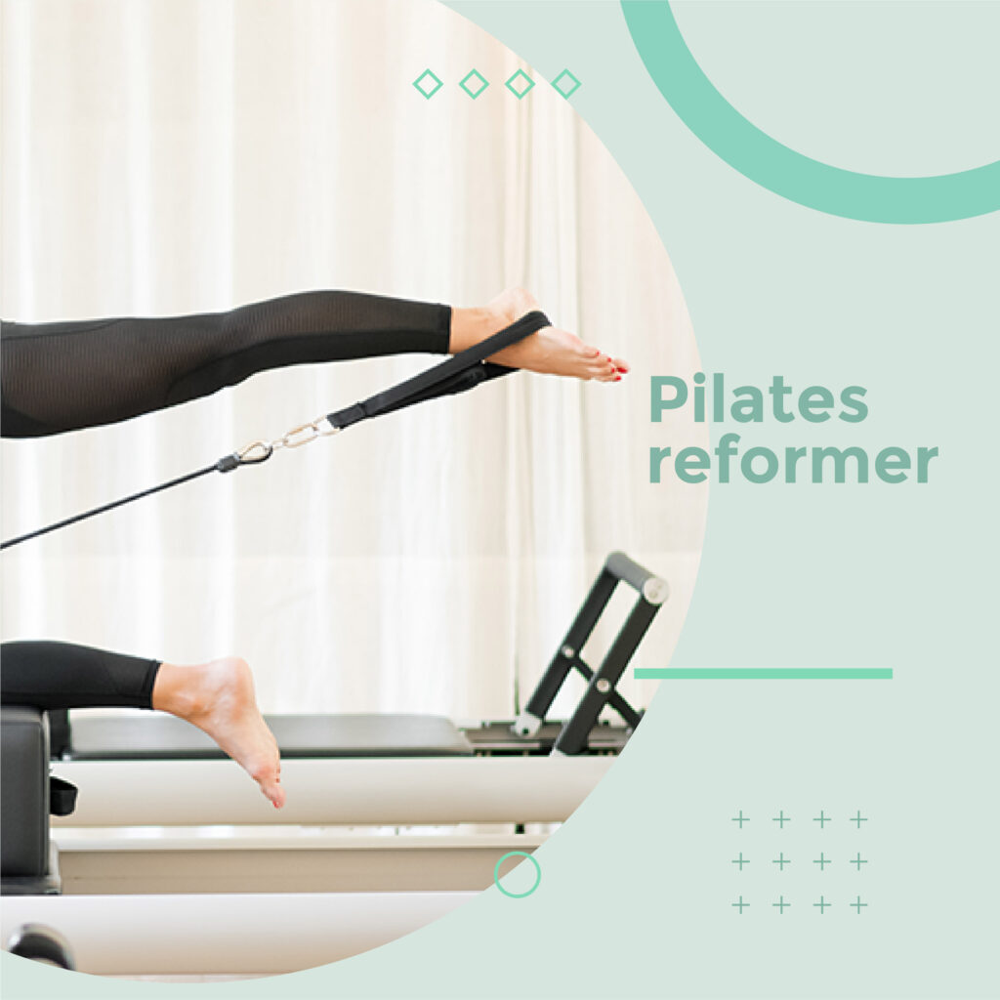
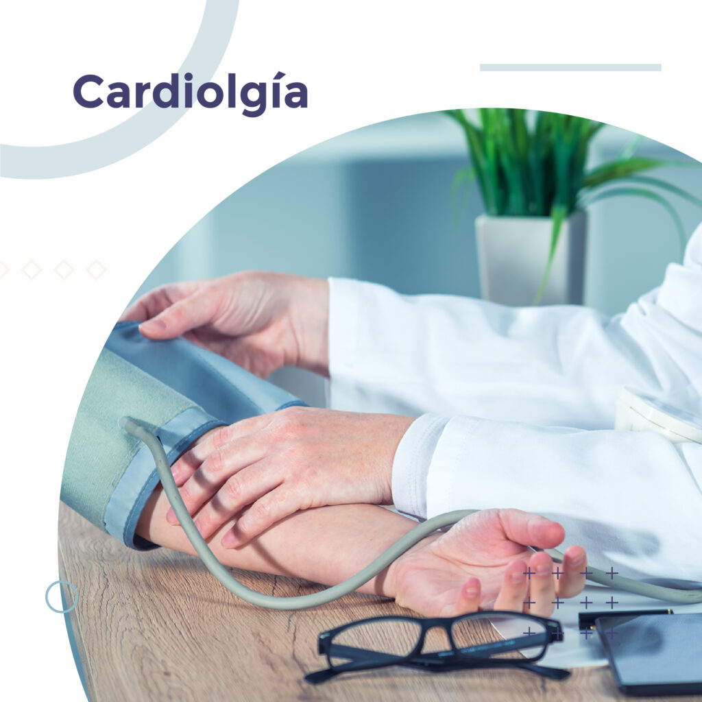
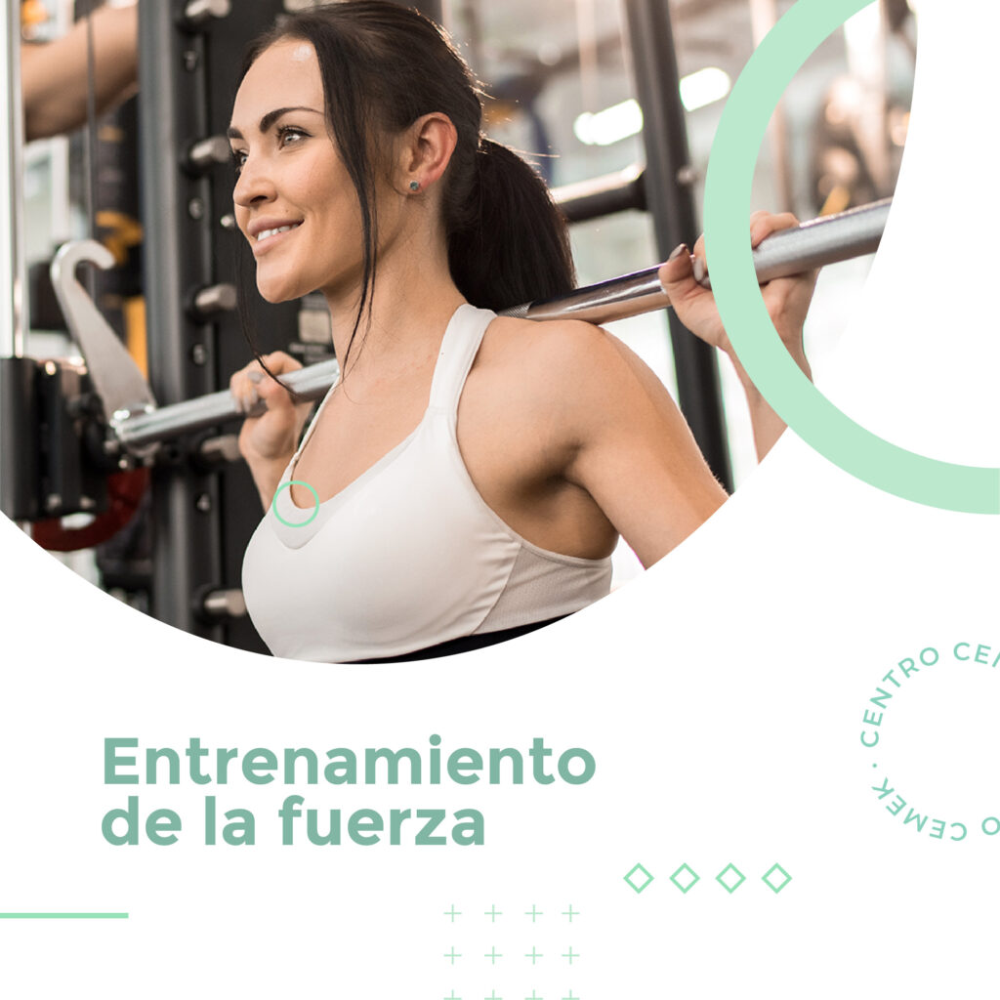

Más de 35 años cuidando la salud de los rosarinos con vocación, profesionalismo y tecnología de vanguardia.

El Centro Médico Kinésico es un espacio integral, ubicado en la ciudad de Rosario, que combinando equipos de alta tecnología y profesionales de excelencia, contribuyen a mejorar la calidad de vida de todos sus pacientes.
Ubicado en calle Paraguay 1423 se despliega un edificio de tres pisos llamado actualmente "Centro Cemek". Desde su nacimiento se constituyó en un centro de Quiropraxia y Kinesiología llamado Centro Vergara, que comenzó en los años 1985 con la Dirección del Kinesiólogo Norberto Vergara, especializado en el Doctorado de Quiropraxia, graduado en la Anglo European College.
Dedicado íntegramente a la salud, donde cada año se incorporan más servicios, especialidades, profesionales y diferentes áreas. CEMEK es un instituto dedicado a contribuir con la mejora de su calidad de vida y su salud postural mediante el uso de diferentes disciplinas y técnicas como la Quiropraxia, la Osteopatía y la corrección postural global.
De un centro de Quiropraxia y Kinesiología a un complejo integral de salud, estética y fitness.
El Kinesiólogo Norberto Vergara, Doctor en Quiropraxia graduado en la Anglo European College, funda el primer centro de Quiropraxia y Kinesiología en Paraguay 1423, Rosario.
Con los años se suman nuevas especialidades: Cardiología, Neurología, Clínica Médica, Endocrinología, Traumatología y más, consolidando el perfil integral del centro.
Se incorporan la Estética Médica, la Cirugía Plástica, la sala de Pilates, el entrenamiento integral, las ecografías y la sala de Rayos, completando la propuesta de bienestar.
27 profesionales, 10 especialidades y 4.032 pacientes satisfechos. Tres pisos de instalaciones modernas al servicio de la salud integral de la comunidad rosarina.
En Centro CEMEK contamos con los mejores profesionales. Un equipo de 27 especialistas altamente capacitados, comprometidos con la excelencia y la atención personalizada.
Contamos con una amplia variedad de servicios, especialidades médicas, actividad física y estética: Acupuntura, Ginecología y Obstetricia, Traumatología, Medicina del Dolor, Kinesiología, Osteopatía, Quiropraxia, Nutrición, Deportología, Dermatología, Estética Médica, Podología, Masajes Terapéuticos, Pilates, Entrenamiento Funcional y Yoga.
Contamos también con entrenamiento integral y de la fuerza, sala de Pilates, ecografías y sala de Rayos.
Conocé nuestros profesionales →Formación continua y los más altos estándares de calidad en cada tratamiento y consulta.
Acompañamos a cada paciente en su proceso de salud con dedicación y vocación de servicio.
Incorporamos tecnología de última generación y nuevas disciplinas para una atención integral y actualizada.
Cada paciente es único. Brindamos atención personalizada con empatía y respeto en cada visita.







Visitanos en Paraguay 1423, Rosario, o solicitá tu turno por teléfono o WhatsApp.